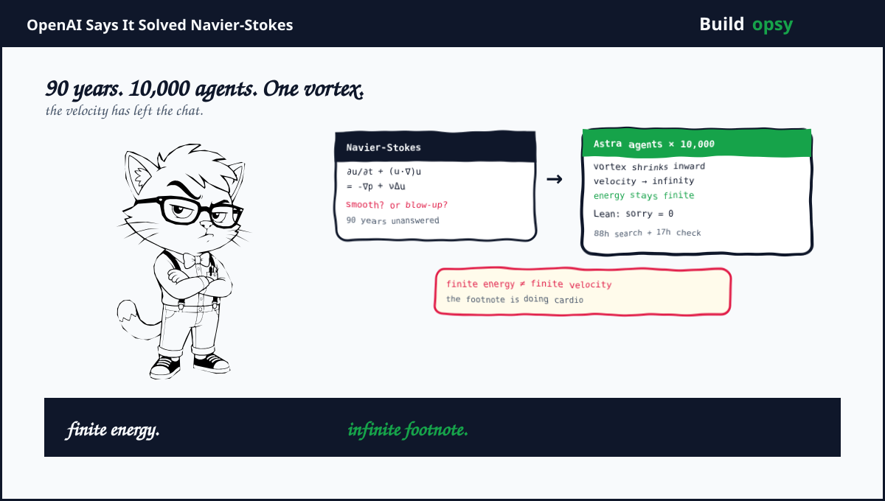
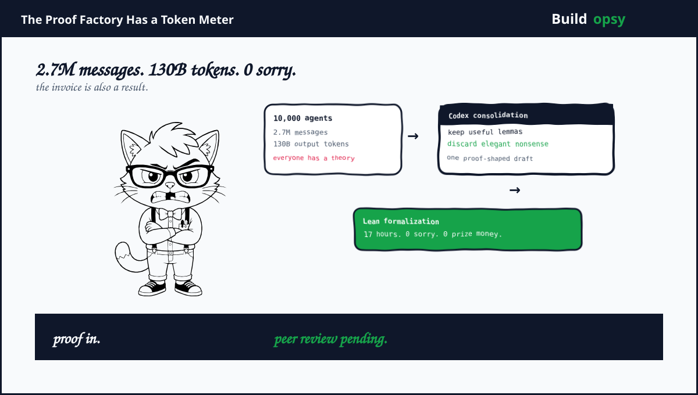

1. What OpenAI Actually Claimed
The September 8 announcement says an internal system produced a solution to the Navier-Stokes existence and smoothness problem. More precisely, it claims a construction where initially smooth three-dimensional incompressible flow develops a singularity in finite time. OpenAI says the fluid begins at rest, receives a smooth external force and keeps finite total energy while velocity becomes unbounded in a shrinking vortex.
That is not a vague claim that the model understands turbulence. It is a specific disproof of global smoothness under one of the accepted formulations. OpenAI identifies this as statement C and statement D in the Clay formulation. The paper and Lean repository are public. OpenAI also says the system is more capable than GPT-6 Astra. Astra did the formalization. The search system did the discovery.
There is one important correction to the social media headline. OpenAI did not say Clay awarded the Millennium Prize. It explicitly says it does not intend to claim the prize. The result still needs mathematical scrutiny. The press release is confident. The footnote is cautious. Believe both sentences at once.
2. The Equation Behind the Panic
For incompressible fluid velocity u and pressure p the equations are usually written as:
∂u/∂t + (u · ∇)u = -∇p + νΔu
∇ · u = 0The terms have physical jobs. The first term is time change. The nonlinear term transports velocity through itself. Pressure enforces incompressibility. Viscosity ν smooths gradients through the Laplacian. The divergence condition says fluid does not compress or expand.
The problem is not solving a nice numerical simulation. Numerical simulations already work extremely well for bounded times and practical flows. The problem asks whether every smooth initial condition remains smooth forever in three dimensions. Or whether some perfectly smooth start creates a finite-time singularity where velocity or a derivative becomes unbounded.
Energy estimates make the trap obvious. Multiply the equation by u and integrate over space. The nonlinear transport term largely cancels under incompressibility. Viscosity dissipates energy. One gets a useful bound on total kinetic energy. But total energy can stay finite while velocity concentrates into a smaller region. A fast narrow vortex can hide unbounded pointwise behavior inside a finite global budget. The accountant is happy. The fluid is not.

3. Why This Stayed Unsolved for 90 Years
Two forces fight inside the equation. Viscosity smooths. Advection stretches and folds. In two dimensions the balance is tame enough for global regularity results. In three dimensions vortex stretching creates a feedback loop. A vortex elongates, elongation increases rotation, rotation can intensify the next elongation. The equation contains its own amplifier.
A proof must control that amplifier for every smooth initial condition or construct one that escapes all controls. It is not enough to draw a beautiful vortex in a simulation. A simulation has finite resolution, finite time and finite arithmetic. A singularity can live below the grid exactly where the interesting part starts. Raising resolution only moves the suspicion to a smaller box.
The official Clay problem permits several equivalent routes. Prove smooth global existence. Prove finite-time breakdown. Or establish the stated alternatives under exact conditions. Each route has technical gates around pressure, force, decay, regularity and the function spaces used. A model can discover a plausible object while silently solving a neighbor problem. That is why the wording matters as much as the vortex.
"We do not intend to claim the Millennium Prize for this result" OpenAI wrote. That is the least marketing-shaped sentence in the announcement and the one readers should keep.
4. The Proposed Counterexample
OpenAI describes a vortex that spirals inward and stretches along its axis. The core shrinks while angular velocity grows. The construction keeps energy finite while velocity becomes unbounded at finite time. The delicate part is that the blow-up must come from the Navier-Stokes dynamics, not from inserting an infinite external force by hand.
In scaling terms the construction needs concentration faster than viscosity can regularize it while preserving the global energy integral. A cartoon version is a tube with radius r(t), circulation that increases as the tube contracts and a velocity scale that rises as r approaches zero. The proof must show the pressure and nonlinear terms close consistently. It must show the force remains smooth. It must show the solution matches the official statement rather than an easier variant.
The announcement says the formalized proof has no unfinished Lean steps. That is valuable. It means the formal statement compiles inside the supplied foundations. It does not automatically mean the formal statement is the famous problem, that the definitions match Clay's, or that the result is novel. Formal verification is a lock on a door. First confirm it is the door to the right building.
5. The Mathematical Fault Line
Write the equation in vorticity form. Let omega equal curl u. The important term is vortex stretching:
∂ω/∂t + (u · ∇)ω = (ω · ∇)u + νΔωThe left side transports a vortex. The right side contains stretching plus viscous diffusion. In two dimensions the stretching term disappears because the vortex has no third direction to amplify itself. In three dimensions it survives. That is the entire villain with better notation.
The standard energy estimate controls the integral of |u| squared. Regularity needs stronger control over derivatives or pointwise velocity. A narrow vortex can make its peak velocity diverge while its total energy stays finite. The proposed construction lives exactly in that gap. It concentrates geometry faster than viscosity can spread it.
One common diagnostic is the Beale-Kato-Majda style condition. Roughly, smoothness can only fail if the time integral of the maximum vorticity diverges. A proof of blow-up must force that integral to diverge without violating incompressibility, finite energy or the stated force conditions. A proof of regularity must show the integral stays finite for every smooth start. Neither route accepts a persuasive picture of a spiral.
6. What the Lean Certificate Can and Cannot Prove
Lean checks formal deductions inside a formal environment. If the definitions are loaded, the axioms are accepted and the proof compiles with no sorry, every encoded step follows. That is a major improvement over an AI paragraph that says therefore the singularity exists and hopes nobody checks the pressure term.
Lean does not choose the right theorem for the human question. It does not decide whether statement C maps to the intended Clay problem. It does not decide whether the external force qualifies as smooth under the required function space. It does not decide whether a change of variables quietly moved the singularity into the initial data. Those are semantic and mathematical review tasks.
The audit should therefore run in four passes. First, compare every quantifier in the formal theorem with Clay's formulation. Second, inspect the initial data and force for hidden singular behavior. Third, check the energy estimate and the nonlinear pressure cancellation around the singular time. Fourth, ask an independent group to reconstruct the argument without OpenAI's narration. A certificate is evidence. It is not a witness with a law degree.
"This is not a culmination, but rather a snapshot in time" OpenAI wrote about the result. That is a useful description. Keep it attached to every headline.
7. What Is Actually Solved
There are four separate questions. First, does the Lean code compile with no sorry? OpenAI says yes. Second, does the formal statement match the Navier-Stokes Millennium formulation? Experts must check. Third, does the mathematical construction produce the claimed singularity under the stated smoothness and force conditions? The paper must survive line by line review. Fourth, is the result new and significant relative to existing work? The community decides that through scrutiny and follow-up.
OpenAI has solved one part of the old workflow. It can search a huge proof space and hand over a machine-checkable artifact. It has not abolished interpretation. Lean can certify that a theorem follows from definitions and lemmas. It cannot tell you that a definition captures the physical question you meant to ask. It cannot award priority. It cannot replace the seminar where somebody says the key lemma quietly assumes the result.
The responsible claim is therefore substantial. OpenAI has shown an AI-driven multi-agent system can produce a candidate research proof for one of the hardest open problems and formalize it. The irresponsible claim is final. Navier-Stokes is solved forever and mathematicians can go home. They cannot. They have to read the paper first.
8. Why This Pressures Anthropic
Anthropic's reported IPO timeline puts public markets under the same microscope. Its story is enterprise demand, revenue growth and efficiency against enormous compute costs. OpenAI's Navier-Stokes result changes the comparison from chatbot benchmark to research output. Investors can now ask whether a model produces defensible intellectual property, not only whether it writes code faster.
That is pressure, not defeat. Anthropic does not need to solve Navier-Stokes to win an IPO. It needs a credible explanation for why its models create durable value as OpenAI demonstrates a new category of value. Enterprise contracts are measurable. A proof is harder to price. It can unlock science, engineering and drug discovery. It can also spend $3M to produce a proof that takes a year to validate. The market will eventually ask which part scales.
OpenAI has created a problem for the whole industry. Once one lab publishes a proof factory, every lab must answer whether it can reproduce the result, verify it independently and afford the attempt. The benchmark becomes less about eloquence and more about research throughput per dollar. That is a much less comfortable race. The models may be clever. The invoices are not sentimental.
9. What Should Happen Next
Release the complete Lean repository, paper revisions and agent logs in a reproducible bundle. State the exact compiler version and imported axioms. Publish the formal mapping from the code statement to Clay's statements C and D. Invite mathematicians who did not work for OpenAI to audit the bridge.
Run independent reproduction campaigns. Use Astra, Sol, Fable and open models with matched compute budgets. Report failures as carefully as successes. A control group is not a decorative extra. It is how you learn whether Astra discovered a theorem or merely found a proof overhang that any sufficiently funded model can harvest.
Separate discovery from authorship. The agents found arguments according to OpenAI. Humans prepared manuscripts and the formalization. Credit should list both contributions with precision. Calling the work human-only is wrong. Calling it model-only is also wrong. The proof factory had operators, prompts, filters, formalizers and reviewers. The system is the authoring unit.
Finally, wait for review. If the result survives, it will not become less impressive because experts checked it. If it fails, the failure will be useful. The worst outcome is not a wrong proof. It is a correct proof-shaped artifact that the market prices before anyone has read the footnote.
The Verdict
OpenAI's Navier-Stokes announcement is big. The technical claim is specific, the reported system is enormous and the Lean formalization makes this more serious than a benchmark score. It is not final yet. The unresolved part moved from can a model find a proof to does the proof actually solve the problem we think it solves.
That is still a remarkable change. Ten thousand agents searched a space that no human team could search at the same speed. They produced a vortex where finite energy coexists with unbounded velocity. They spent 130 billion output tokens to do it. The next era of mathematical research may look less like one genius at a blackboard and more like a very expensive proof factory with a compiler at the exit.
The equation may be solved. The claim is not. That is what peer review is for.
Sources and Method
This audit uses OpenAI's September 8 paper and Lean repository as the primary source. The Navier-Stokes formulation comes from the Clay Mathematics Institute problem statement. Reuters and current IPO reporting provide the market context. Cost figures are explicit scenario math based on OpenAI's reported token counts. No claim here treats the result as a Clay Prize award or completed peer review.